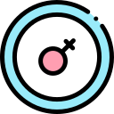

O anel vaginal é um pequeno painel com uma superfície lisa, não porosa e não unida. O anel contém etonogestrel e etinilestradiol.
O anel deve ser colocado na vagina, na forma de 8, na parte superior da vagina, uma área nesta posição muito elástica e não sensível ao toque, no 5º dia por três semanas, e permanecerá por três semanas (21 dias). Após este período, deve ser feito e uma pausa de 7 dias antes da inserção de outro anel. Um novo anel deve ser usado a cada 21 dias durante 3 meses (13 ciclos), seguido de 1 semana sem tratamento.
Os efeitos colaterais indesejados são: dor vaginal, sangramento de cabeça, perda de peso, sangramento de leucorréia e ganho de peso.
Não é adequado para mulheres com doença hepática, câncer de mama, risco de trombose, suspeita de gravidez, fumantes, pressão alta, dores de cabeça com condições neurológicas, diabetes ou alergias a um dos ingredientes. Durante a amamentação, não pode ser usado e deve ser substituído por outro.
site:https://www.tuasaude.com
site:https://www.gineco.com.br/